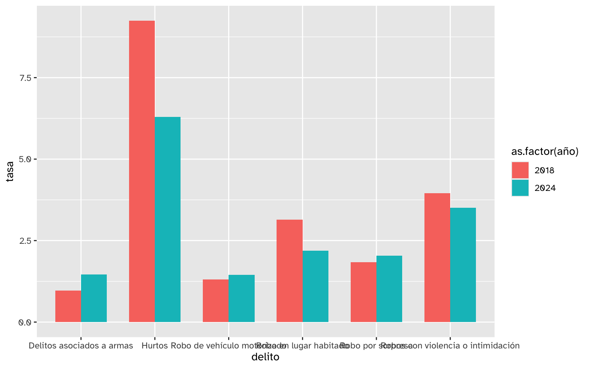
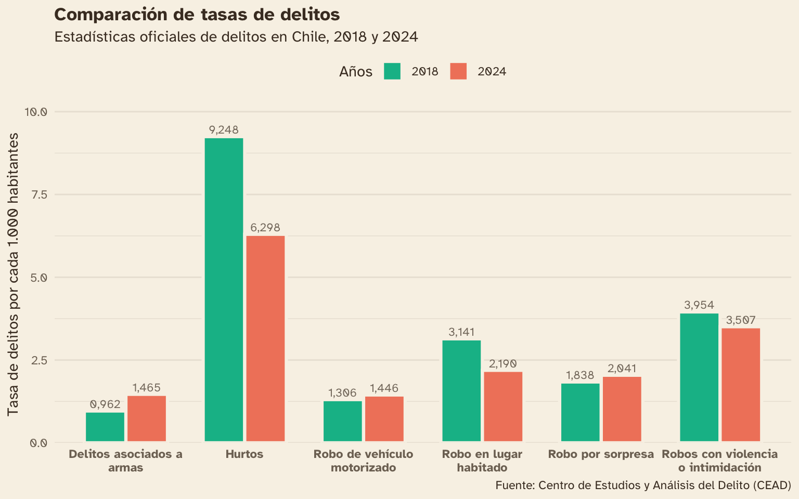
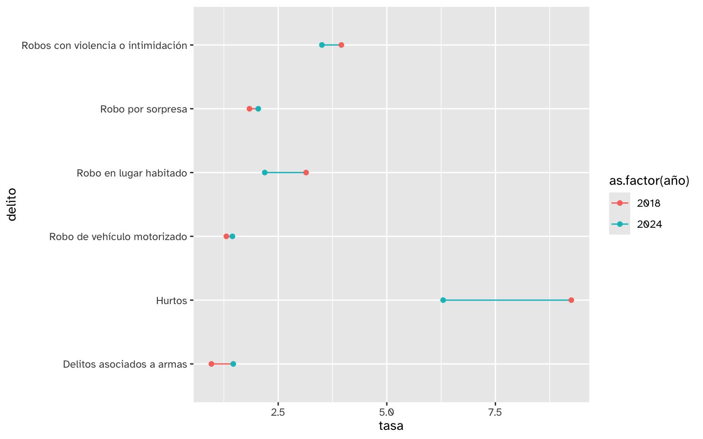
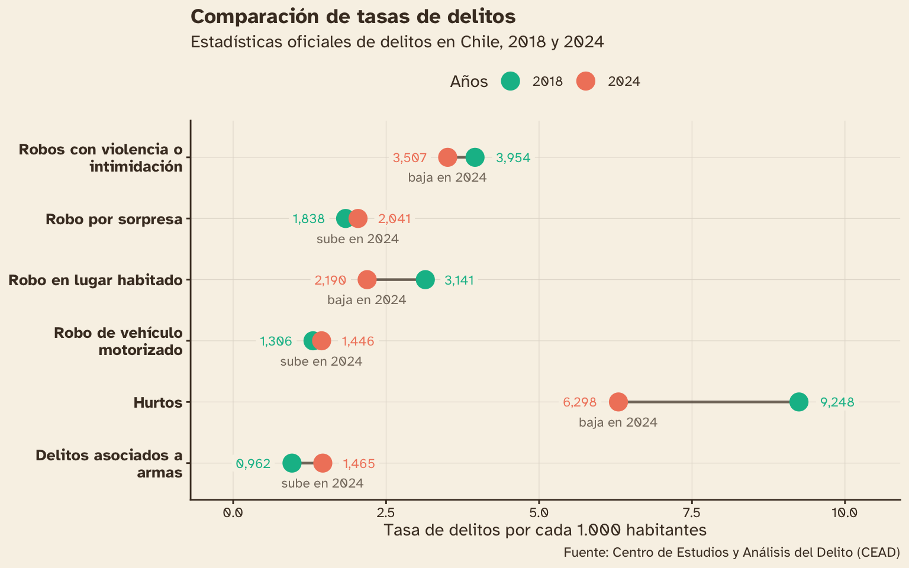

Gráficos de puntos comparativos o dumbbell en {ggplot2}
24/4/2026
Los gráficos de puntos comparativos, también conocidos como dumbbell o de mancuernas, son un tipo de visualización que muestra el cambio en los valores de un mismo grupo en dos momentos distintos. Cada valor se representa con un círculo, ambos conectados por una línea, donde la posición representa la cifra y su distancia representa la brecha. El objetivo de estos gráficos es comparar el cambio del valor.
Si bien los gráficos de barras también permiten comparar valores, el gráfico dumbell hace más explícita la comparación al eliminar otros elementos distractores y enfocar la atención en la distancia entre los puntos.
Obtener los datos
En este tutorial vamos a construir este tipo de gráfico usando datos reales de delincuencia en Chile para comparar la tasa de cuatro tipos de delitos entre 2018 y 2024.
Los datos de delincuencia están disponibles en el
repositorio delincuencia_chile, que procesa las cifras oficiales del
Centro de Estudios y Análisis del Delito (CEAD) y además genera un
dashboard interactivo con los resultados.
Puedes descargar los datos en formato Parquet en el siguiente enlace:
Cargar los datos
Cargamos los datos usando read_parquet() del paquete {arrow}:
library(arrow)
# cargar directamente desde internet
# delitos <- read_parquet("https://github.com/bastianolea/delincuencia_chile/raw/main/datos_procesados/cead_delincuencia_chile.parquet")
# cargar archivo descargado
delitos <- read_parquet("cead_delincuencia_chile.parquet")
head(delitos)
comuna cut_comuna region cut_region fecha delito
1 Iquique 1101 Tarapacá 1 2018-01-01 Homicidios
2 Iquique 1101 Tarapacá 1 2018-01-01 Femicidios
3 Iquique 1101 Tarapacá 1 2018-01-01 Violaciones
4 Iquique 1101 Tarapacá 1 2018-01-01 Abusos sexuales
5 Iquique 1101 Tarapacá 1 2018-01-01 Acosos sexuales
6 Iquique 1101 Tarapacá 1 2018-01-01 Otros delitos sexuales
delito_n
1 3
2 0
3 0
4 10
5 0
6 0
Los datos tienen una fila por cada tipo de delito, zona geográfica y período, con una columna delito_n que indica la cantidad de casos.
Preparación de los datos
Para comparar cambios de determinados delitos entre dos años a nivel nacional, necesitamos realizar algunos procesos sobre la data.
Contar delitos por año
Los datos vienen desagregados por zona geográfica y período. Para este tutorial necesitamos totales a nivel nacional, así que agrupamos por año y tipo de delito con group_by() para sumar todos los registros por año. Necesitamos la fecha en años, pero la columna fecha tiene la fecha en formato texto con el año, mes y día, así que usamos la función year() de {lubridate} para extraer el año desde la columna de fecha, y ahí sí podemos hacer group_by() seguido de summarize() para obtener el conteo total por cada combinación de año y delito.
library(dplyr)
library(lubridate)
# contar delitos por año
delitos_conteo <- delitos |>
mutate(año = year(fecha)) |> # convertir fechas a años
group_by(año, delito) |>
summarize(delitos = sum(delito_n)) |> # sumar delitos por año y tipo de delito
mutate(delitos = as.integer(delitos)) |>
ungroup()
Recordemos que el ungroup() al final es importante para evitar que el agrupamiento afecte las operaciones siguientes.
Revisemos cómo quedan los datos:
delitos_conteo |>
filter(año == 2024) |>
arrange(-delitos) |>
head()
# A tibble: 6 × 3
año delito delitos
<dbl> <fct> <int>
1 2024 Amenazas 154037
2 2024 Violencia intrafamiliar 141433
3 2024 Hurtos 124902
4 2024 Daños 123062
5 2024 Consumo de alcohol y drogas en la vía pública 104931
6 2024 Robos con violencia o intimidación 69545
Seleccionar delitos y años
Seleccionamos los tipos de delito que nos interesan comparar, y los años que queremos comparar. Este paso definirá la información que representaremos en el gráfico!
delitos_filtro <- delitos_conteo |>
# delitos seleccionados
filter(delito %in% c("Delitos asociados a armas",
"Robo por sorpresa",
"Robo de vehículo motorizado",
"Hurtos",
"Robo en lugar habitado",
"Robos con violencia o intimidación")) |>
# años a comparar
filter(año %in% c(2018, 2024))
delitos_filtro
# A tibble: 12 × 3
año delito delitos
<dbl> <fct> <int>
1 2018 Delitos asociados a armas 17893
2 2018 Hurtos 172014
3 2018 Robo de vehículo motorizado 24285
4 2018 Robo en lugar habitado 58431
5 2018 Robo por sorpresa 34194
6 2018 Robos con violencia o intimidación 73538
7 2024 Delitos asociados a armas 29061
8 2024 Hurtos 124902
9 2024 Robo de vehículo motorizado 28671
10 2024 Robo en lugar habitado 43436
11 2024 Robo por sorpresa 40481
12 2024 Robos con violencia o intimidación 69545
Calcular tasa de delitos por habitante
Si bien podemos simplemente comparar los delitos entre 2018 y 2024, sería incorrecto debido a que ignora las diferencias de población entre ambos años. Al comparar cantidad total de delitos, un delito que parece aumentar puede estar simplemente reflejando un aumento de habitantes. La solución es calcular una tasa que ajuste la cantidad de delitos a la población existente en cada año.
Para eso necesitamos datos de población para los años que filtremos. Podemos obtener la población anual desde las proyecciones de población del Instituto Nacional de Estadísticas..
Cargamos los datos con read_xlsx() del paquete {readxl} y luego limpiamos los nombres de columnas con clean_names() del paquete {janitor}. Como los datos vienen por edad y fecha, agrupamos los datos y sumamos las poblaciones para obtener la población nacional en cada fecha:
library(readxl)
library(janitor)
# cargar datos
poblacion <- read_xlsx("estimaciones-y-proyecciones-de-población-1992-2070_base-2024_base-de-datos.xlsx")
# colapsar cifras por años
poblacion_suma <- poblacion |>
clean_names() |>
filter(nivel == "PAÍS") |>
# sumar por fecha
group_by(nivel, fecha) |>
summarize(poblacion = sum(poblacion)) |>
ungroup()
Luego filtramos las fechas que necesitamos, y convertimos los valores a fecha y luego a años para que coincidan con los datos de delincuencia:
poblacion_filtro <- poblacion_suma |>
filter(fecha %in% c("1/1/2018", "1/1/2024")) |> # filtrar fechas
mutate(fecha = dmy(fecha), # convertir texto a fecha
año = year(fecha)) |> # convertir fecha a años
select(-nivel, -fecha)
poblacion_filtro
# A tibble: 2 × 2
poblacion año
<dbl> <dbl>
1 18600071 2018
2 19832867 2024
Con los datos de población listos, hacemos un left_join por año para agregar la población a la tabla de delitos. Como estamos uniendo por año, cada fila de delitos recibe automáticamente la población correspondiente a ese año.
# agregar población a cada año
delitos_poblacion <- delitos_filtro |>
left_join(poblacion_filtro,
join_by(año))
delitos_poblacion
# A tibble: 12 × 4
año delito delitos poblacion
<dbl> <fct> <int> <dbl>
1 2018 Delitos asociados a armas 17893 18600071
2 2018 Hurtos 172014 18600071
3 2018 Robo de vehículo motorizado 24285 18600071
4 2018 Robo en lugar habitado 58431 18600071
5 2018 Robo por sorpresa 34194 18600071
6 2018 Robos con violencia o intimidación 73538 18600071
7 2024 Delitos asociados a armas 29061 19832867
8 2024 Hurtos 124902 19832867
9 2024 Robo de vehículo motorizado 28671 19832867
10 2024 Robo en lugar habitado 43436 19832867
11 2024 Robo por sorpresa 40481 19832867
12 2024 Robos con violencia o intimidación 69545 19832867
Ahora calculamos la tasa: dividimos el conteo de delitos por la población y multiplicamos por 1.000. Así, un valor de 3,5 significaría que ocurrieron 3,5 casos de ese tipo de delito por cada 1.000 habitantes en Chile.
# calcular tasa
delitos_tasa <- delitos_poblacion |>
mutate(tasa = delitos / poblacion * 1000)
delitos_tasa
# A tibble: 12 × 5
año delito delitos poblacion tasa
<dbl> <fct> <int> <dbl> <dbl>
1 2018 Delitos asociados a armas 17893 18600071 0.962
2 2018 Hurtos 172014 18600071 9.25
3 2018 Robo de vehículo motorizado 24285 18600071 1.31
4 2018 Robo en lugar habitado 58431 18600071 3.14
5 2018 Robo por sorpresa 34194 18600071 1.84
6 2018 Robos con violencia o intimidación 73538 18600071 3.95
7 2024 Delitos asociados a armas 29061 19832867 1.47
8 2024 Hurtos 124902 19832867 6.30
9 2024 Robo de vehículo motorizado 28671 19832867 1.45
10 2024 Robo en lugar habitado 43436 19832867 2.19
11 2024 Robo por sorpresa 40481 19832867 2.04
12 2024 Robos con violencia o intimidación 69545 19832867 3.51
Clasificar la variación
Ciertos aspectos de la visualización necesitan variables extra relacionadas a los datos existentes. En nuestro caso, serviría calcular una variable que indique si cada delito subió, bajó o se mantuvo igual. Por ejemplo:
delitos_tasa |>
filter(delito == "Hurtos") |>
select(delito, año, tasa)
# A tibble: 2 × 3
delito año tasa
<fct> <dbl> <dbl>
1 Hurtos 2018 9.25
2 Hurtos 2024 6.30
Vemos que el valor del segundo año es inferior al del primer año, o sea que los delitos de hurtos bajaron. Creemos una variable que indique esto!
La función lag() nos entrega el valor de la observación anterior a cada fila, por lo que nos sirve para hacer comparaciones y así saber si un valor es mayor o menor al anterior.
Por ejemplo:
delitos_tasa |>
filter(delito == "Hurtos") |>
select(delito, año, tasa) |>
arrange(año) |>
# obtener el valor del año anterior
mutate(tasa_anterior = lag(tasa)) |>
slice_max(año)
# A tibble: 1 × 4
delito año tasa tasa_anterior
<fct> <dbl> <dbl> <dbl>
1 Hurtos 2024 6.30 9.25
Primero ordenamos los datos por tipo de delito y año, de modo que dentro de cada delito, el año quede de menor a mayor. Este orden es fundamental para que lag() funcione correctamente. Luego agrupamos por delito para que el cálculo se realice por separado en cada delito, y usamos lag(tasa) para obtener la tasa del año anterior en cada fila. Luego, con case_when() clasificamos cada observación en la variable cambio según si la tasa subió, bajó o se mantuvo igual, por medio de una simple comparación.
delitos_tasa_clasif <- delitos_tasa |>
arrange(delito, año) |>
group_by(delito) |>
# define si sube o baja respecto al año anterior
mutate(cambio = case_when(tasa > lag(tasa) ~ "sube",
tasa < lag(tasa) ~ "baja",
tasa == lag(tasa) ~ "igual")
)
delitos_tasa_clasif |>
select(delito, año, tasa, cambio)
# A tibble: 12 × 4
# Groups: delito [6]
delito año tasa cambio
<fct> <dbl> <dbl> <chr>
1 Delitos asociados a armas 2018 0.962 <NA>
2 Delitos asociados a armas 2024 1.47 sube
3 Hurtos 2018 9.25 <NA>
4 Hurtos 2024 6.30 baja
5 Robo de vehículo motorizado 2018 1.31 <NA>
6 Robo de vehículo motorizado 2024 1.45 sube
7 Robo en lugar habitado 2018 3.14 <NA>
8 Robo en lugar habitado 2024 2.19 baja
9 Robo por sorpresa 2018 1.84 <NA>
10 Robo por sorpresa 2024 2.04 sube
11 Robos con violencia o intimidación 2018 3.95 <NA>
12 Robos con violencia o intimidación 2024 3.51 baja
Las filas de 2018 quedan con NA en cambio, porque no hay un año anterior con el que comparar, así que procedemos a rellenar con el valor que sí tiene información dentro del mismo grupo usando fill() de {tidyr}. Al especificar .direction = "up" en fill(), la función propaga el valor de 2024 hacia arriba para rellenar el NA de 2018. Así ambas filas de cada delito quedan con la misma etiqueta de variación, que usaremos para colorear el gráfico.
library(tidyr)
delitos_tasa_clasif <- delitos_tasa_clasif |>
# rellenar valores del primer año
group_by(delito) |>
fill(cambio, .direction = "up")
delitos_tasa_clasif |>
select(delito, año, tasa, cambio)
# A tibble: 12 × 4
# Groups: delito [6]
delito año tasa cambio
<fct> <dbl> <dbl> <chr>
1 Delitos asociados a armas 2018 0.962 sube
2 Delitos asociados a armas 2024 1.47 sube
3 Hurtos 2018 9.25 baja
4 Hurtos 2024 6.30 baja
5 Robo de vehículo motorizado 2018 1.31 sube
6 Robo de vehículo motorizado 2024 1.45 sube
7 Robo en lugar habitado 2018 3.14 baja
8 Robo en lugar habitado 2024 2.19 baja
9 Robo por sorpresa 2018 1.84 sube
10 Robo por sorpresa 2024 2.04 sube
11 Robos con violencia o intimidación 2018 3.95 baja
12 Robos con violencia o intimidación 2024 3.51 baja
También vamos a calcular la variable tipo para establecer la posición de cada valor: si el valor de un año corresponde al mayor o al menor entre los dos años disponibles. Como los datos están agrupados, lo hacemos simplemente preguntando si el valor es el mayor, o si es el menor.
delitos_tasa_clasif <- delitos_tasa_clasif |>
group_by(delito) |>
# define si el valor es el mayor o el menor
mutate(tipo = case_when(tasa == max(tasa) ~ "mayor",
tasa == min(tasa) ~ "menor")
) |>
ungroup()
delitos_tasa_clasif |>
select(delito, año, tasa, tipo)
# A tibble: 12 × 4
delito año tasa tipo
<fct> <dbl> <dbl> <chr>
1 Delitos asociados a armas 2018 0.962 menor
2 Delitos asociados a armas 2024 1.47 mayor
3 Hurtos 2018 9.25 mayor
4 Hurtos 2024 6.30 menor
5 Robo de vehículo motorizado 2018 1.31 menor
6 Robo de vehículo motorizado 2024 1.45 mayor
7 Robo en lugar habitado 2018 3.14 mayor
8 Robo en lugar habitado 2024 2.19 menor
9 Robo por sorpresa 2018 1.84 menor
10 Robo por sorpresa 2024 2.04 mayor
11 Robos con violencia o intimidación 2018 3.95 mayor
12 Robos con violencia o intimidación 2024 3.51 menor
Esta es una forma simple de hacerlo, que ignora la posiblidad de casos donde los valores no cambien, pero por ahora es suficiente.
Visualización
Con los datos procesados, podemos pasar a la visualización!
Gráfico de barras apiladas
La visualización más básica para comparar dos o más grupos es un gráfico de barras. En este caso queremos mostrar barras por delito, pero también múltiples barras por cada delito (los años), así que mapeamos la variable año al relleno de color (fill) de las barras, y agregando position = position_dodge() a la capa de columnas (geom_col()) hacemos que las barras aparezcan una al lado de la otra. En este caso, la variable año viene como numérica, así que usamos as.factor(año) para que {ggplot2} entienda los números como categorías discretas y no como variables continuas.
Empezamos con un gráfico básico:
library(ggplot2)
library(scales)
delitos_tasa_clasif |>
ggplot() +
aes(x = delito, y = tasa,
fill = as.factor(año)) +
geom_col(
width = 0.7,
position = position_dodge()
)

Una vez que confirmamos que el gráfico básico funciona como se espera, mejoramos los detalles estéticos del mismo:
- Agregamos textos sobre las barras con
geom_col() - Aplicamos una paleta de colores para el relleno de las barras con
scale_fill_manual() - Ajustamos el espaciado de las escalas y sus textos
- Agregamos textos de título, subtítulo, fuente y títulos de ejes
- Aplicamos un tema de colores en
theme_minimal()y ajustes a los elementos específicos del tema entheme()
delitos_tasa_clasif |>
ggplot() +
aes(x = delito, y = tasa,
fill = as.factor(año)) +
# barras
geom_col(
width = 0.7,
color = "#F8F2E7", linewidth = 1.1,
position = position_dodge() # lado a lado
) +
# textos sobre las barras
geom_text(
aes(
label = label_number(decimal.mark = ",")(tasa)
),
color = "#49392A", size = 3, alpha = .7,
position = position_dodge(width = 0.7),
vjust = -0.4
) +
# paleta de colores
scale_fill_manual(values = c("2018" = "#06BB96", "2024" = "#F1856A")) +
# expandir espacio vertical para etiqueta de texto
scale_y_continuous(expand = expansion(c(0, 0.1))) +
# cortar líneas de texto muy largas
scale_x_discrete(labels = scales::label_wrap(20)) +
# textos
labs(fill = "Años", y = "Tasa de delitos por cada 1.000 habitantes", x = NULL,
title = "Comparación de tasas de delitos",
subtitle = "Estadísticas oficiales de delitos en Chile, 2018 y 2024",
caption = "Fuente: Centro de Estudios y Análisis del Delito (CEAD)") +
# temas
theme_minimal(base_family = "Atkinson Hyperlegible",
ink = "#49392A", paper = "#F8F2E7") +
theme(panel.grid.major.x = element_blank(),
axis.text.x = element_text(face = "bold"),
legend.position = "top",
plot.title = element_text(face = "bold"))

La comparación entre valores funciona, pero ahora veremos una forma distinta de hacerlo.
Publicaciones relacionadas

Gráfico dumbbell
Para hacer un gráfico de puntos comparados o dumbell necesitamos expresar los valores como puntos en vez de barras, y unir los puntos con una línea.
delitos_tasa_clasif |>
ggplot() +
aes(y = delito, x = tasa,
color = as.factor(año)) +
geom_line(
aes(group = delito)
) +
geom_point()

El argumento aes(group = delito) en geom_line() le dice a {ggplot2} que dibuje una línea por cada tipo de delito, conectando sus dos puntos.
Ahora podemos aplicar más detalle a la visualización:
- Paleta de colores con
scale_color_manual() - Textos al lado de cada punto con
geom_text(), con su posición dependiendo de si cada cifra es la menor (a la izquierda) o menor (a la derecha) - Aumentar la escala horizontal para dar espacio a los textos que agregamos, con
expansion()dentro descale_x_continuous() - Aplicar un tema de colores en
theme_minimal()y ajustar a los elementos específicos del tema entheme()
library(glue)
delitos_tasa_clasif |>
ggplot() +
aes(y = delito, x = tasa,
color = as.factor(año)) +
# línea que conecta puntos de delitos
geom_line(
aes(group = delito),
color = "#49392A", alpha = 0.7,
linewidth = .8,
show.legend = FALSE
) +
geom_point(size = 5) +
# texto con tasas al lado de cada círculo
geom_label(
aes(
label = label_number(decimal.mark = ",")(tasa),
hjust = if_else(tipo == "menor", 1.4, -0.4)
),
size = 3, linewidth = 0, show.legend = FALSE
) +
# texto debajo del último año
geom_text(
data = ~filter(.x, año == max(año)),
aes(label = glue("{cambio} en {año}")),
vjust = 2.7, color = "#49392A", alpha = 0.7, size = 3,
show.legend = FALSE
) +
# paleta de colores
scale_color_manual(values = c("2018" = "#06BB96", "2024" = "#F1856A")) +
# expansión de eje horizontal
scale_x_continuous(expand = expansion(c(0.2, 0.2))) +
# cortar textos largos del eje vertical
scale_y_discrete(labels = scales::label_wrap(23)) +
# textos
labs(y = NULL, x = "Tasa de delitos por cada 1.000 habitantes", color = "Años",
title = "Comparación de tasas de delitos",
subtitle = "Estadísticas oficiales de delitos en Chile, 2018 y 2024",
caption = "Fuente: Centro de Estudios y Análisis del Delito (CEAD)") +
# temas
theme_classic(base_family = "Atkinson Hyperlegible",
ink = "#49392A", paper = "#F8F2E7") +
theme(panel.grid.major = element_line(linewidth = .2, color = "#E3DCD1"),
legend.position = "top",
plot.title = element_text(face = "bold"),
axis.text.y = element_text(face = "bold", color = "#49392A", size = 10))

Para cada tipo de delito, vemos que el punto de la izquierda es el menor valor y el de la derecha el mayor, mientras que la línea muestra la brecha.
Puedes ver una versión de este mismo gráfico en mi aplicación web de estadísticas de delincuencia en Chile, donde puedes elegir interactivamente los años a comparar y los delitos.
Publicaciones sobre visualización de datos